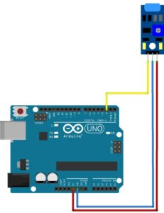

Простой датчик вибрации
Описание
Основной элемент датчика – металлическая пружина гибкой структуры, расположенная во внутренней части трубки из пластика. При наличии каких-либо воздействий на нее она начинает колебаться. Усиление сигнала происходит за счет его подачи сначала на операционный усилитель, а потом на выход аналогового типа. Важным элементом датчика вибрации является потенциометр, который регулирует чувствительность прибора, и позволяет устанавливать необходимый порог срабатывания.
Датчик вибрации имеет три выхода:
• Земля;
• Питание;
• Выход аналогового сигнала А0.
Находящийся на плате потенциометр позволяет настроить его чувствительность. Он представляет собой переменный резистор c сопротивлением регулируемого типа. На плате датчика также присутствуют светодиоды, которые сигнализируют о наличии питания. Кроме того, некоторые разновидности оснащаются цифровым выводом D0, который выдает логический ноль при достижении порогового значения уровня вибрации.
В состоянии покоя модуль находится в разомкнутом состоянии, и протекания тока по нему нет. При наличии внешних вибрационных воздействий за счет раскачивания пружины происходит кратковременное замыкание контактов. В результате происходит сработка датчика, и на выходе появляется логический 0.
Срабатывание датчика происходит в независимости от его пространственного расположения. Технические параметры датчиков вибрации для Ардуино (могут отличаться в зависимости от модели устройства):
• Питающее напряжение от 3 до 5 В;
• Ток потребления 4-5мА;
• С наличием или отсутствием цифрового выхода;
• С наличием или отсутствием регулировки чувствительности.
Датчики могут отличаться по весу и габаритам, но обязательно содержат монтажное отверстие для крепления к плате
Открыть оригинал
Схема подключения

Код подключения
#define PIN_LED 13
#define PIN_SENSOR 2 // Пин, ккотормоу присоединен датчик вибрации
void setup() {
pinMode(PIN_LED, OUTPUT);
}
void loop() {
int val = digitalRead(PIN_SENSOR); // Считваем значение с датчика
if(val==1){
digitalWrite(PIN_LED, HIGH); // Датчик сработад – включаем светодиод
}else{
digitalWrite(PIN_LED, LOW);
}
}